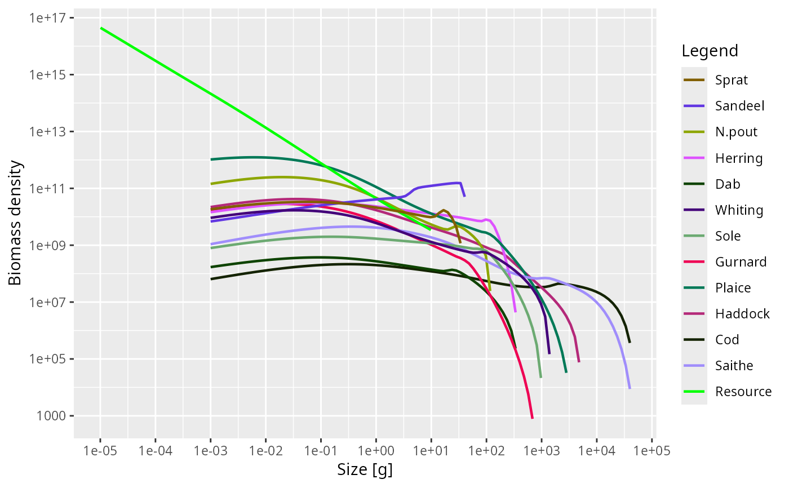

Find a steady state by directly solving the steady-state equation
Source:R/steadyNewton.R
steadyNewton.Rd![[Experimental]](figures/lifecycle-experimental.svg) This is an alternative to
This is an alternative to steady() that finds the steady state by solving
the steady-state equation F(N) = 0 with a Newton-type root finder instead
of running the dynamics to convergence. The advantage is that it converges
to the steady state even when that steady state is dynamically unstable,
a case in which steady() fails because the time-stepping diverges away from
the fixed point.
Usage
steadyNewton(params, ...)
# S3 method for class 'MizerParams'
steadyNewton(
params,
effort = params@initial_effort,
preserve = c("reproduction_level", "erepro", "R_max"),
reproduction = c("fixed", "dynamic"),
extinction_floor = 1e-06,
verbose = FALSE,
tol = 1e-06,
maxit = 200,
method = c("Broyden", "Newton"),
global = "dbldog",
info_level = default_info_level(),
...
)Arguments
- params
A MizerParams object. Its
initial_nis used as the starting guess for the iteration.- ...
Unused.
- effort
The fishing effort. By default the initial effort stored in
params.- preserve
-
Specifies whether the
reproduction_levelshould be preserved (default) or the maximum reproduction rateR_maxor the reproductive efficiencyerepro. SeesetBevertonHolt()for an explanation of thereproduction_level. This argument is ignored whenreproduction = "dynamic". - reproduction
-
If
"fixed", the reproduction rate (RDD) is held constant at the initial value. If"dynamic", the reproduction dynamics are run dynamically and the reproduction parameters are not adjusted. Default is"fixed". - extinction_floor
-
The relative abundance floor below which a species is considered extinct.
Only used when
reproduction = "dynamic". Default is 1e-6. - verbose
If
TRUEthen the solver iterations will be traced and printed to the console. Default isFALSE.- tol
Convergence tolerance passed to
nleqslv::nleqslv()(both the function-value toleranceftoland the step tolerancextol).- maxit
Maximum number of iterations for
nleqslv::nleqslv().- method
The
nleqslv::nleqslv()method, either"Newton"(with a numerical Jacobian calculated at each iteration) or"Broyden"(which calculates the full Jacobian only once and then only updates it on each- global
The globalisation strategy passed to
nleqslv::nleqslv(). The default"dbldog"(double dogleg) is a robust trust-region method.- info_level
Controls the amount of information messages and warnings that are shown. Higher levels lead to more messages,
info_level = 0gives silence. The default is taken from themizer_info_leveloption, seedefault_info_level().
Value
A MizerParams object with the initial state set to the steady state.
Details
By default, or when reproduction = "fixed", the function holds the
reproduction rate (RDD) constant while solving for the consumer spectra,
substitutes the analytic steady state of the resource, and keeps any other
components constant. After the spectra have been found it restores
density-dependent Beverton-Holt reproduction with setBevertonHolt(),
honouring the preserve argument exactly as steady() does.
If reproduction = "dynamic", the reproduction dynamics are run dynamically,
meaning the reproduction rate varies during the solve and the reproduction
parameters are not adjusted.
The consumer densities are solved for in log space, which both keeps them
positive and conditions the otherwise badly-scaled system. The unknowns are
the size classes in the full potential grid support (running from the egg
size up to the grid truncation limit support_top_idx()), regardless of
whether they carry non-zero density in the supplied initial spectra. A
smoothed log-abundance penalty floor is applied to all size classes, which
automatically handles zero-density and tail classes smoothly and prevents
singular Jacobians. After convergence, size classes that remain at or near
the floor are set to zero. This allows the solver to automatically discover
the support of the steady state. The nonlinear system is solved with a
globalised Newton iteration from the nleqslv package, starting from the
current initial_n. Newton's method converges from any starting point in the
root's basin of attraction (which is unrelated to the dynamic stability of
the steady state), so a reasonable initial guess should still be supplied in
initialN(params) — for example the spectra from a nearby stable
parameterisation, or the (diverging) output of steady().
The solver respects the active transport scheme: if the experimental
second-order scheme is enabled (see second_order_w()) it solves the
steady-state equation of that scheme. With the van Leer reconstruction the
residual is only Lipschitz, so the iteration converges to a fixed point of the
dynamics but not to machine precision. The unlimited "centred"
reconstruction admits an undamped odd-even mode at a steady state with no
physical diffusion, giving an ill-conditioned steady-state Jacobian for which
the solver is not expected to converge.
The Newton iteration also needs the residual \(F(N)\) to be continuous. A
custom rate function registered with setRateFunction() that jumps as a
function of the abundances makes \(F\) discontinuous, and where the
equilibrium lies on the switching threshold there is no root at all, because
neither branch is in equilibrium there. The solver then stalls (nleqslv
termination code 3) and returns an iterate pinned to the threshold. See
Discontinuous rate functions.
Only the default semichemostat resource dynamics
(resource_dynamics = "resource_semichemostat") are currently supported,
because the solver substitutes the analytic resource steady state. For other
resource dynamics the function stops with an error.
Examples
# \donttest{
params <- steadyNewton(NS_params)
#> The biomasses of the solution change at up to 7.7e-07 per year.
#> Warning: The following species require an unrealistic value greater than 1 for `erepro`: Sprat
plotSpectra(params)

# }